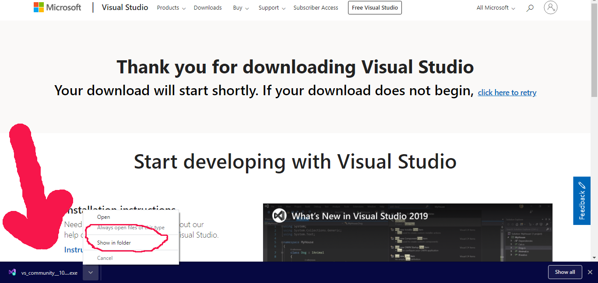
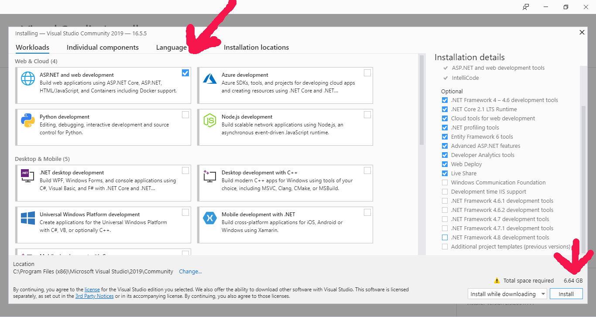
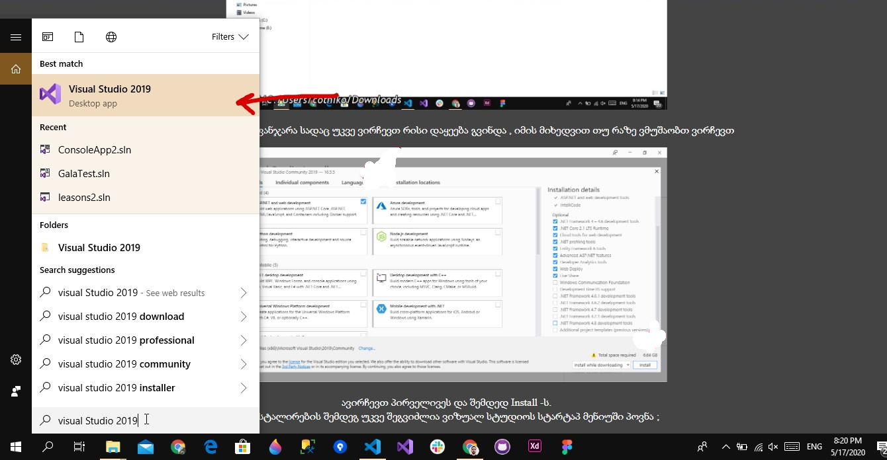

visual studio - ვიზუალ სტუდიოს გადმოწერა შეგიძლიათ https://visualstudio.microsoft.com/downloads/ მისამართზე;
როდესაც საიტზე შევალთ დაგვხვდება ასეთი მდგომარეობა,
ავირჩევთ Community -ს და გადმოვწერთ.
შემდეგ ვიპოვით ჩვენს გადმოწერილ ფაილს
ორჯერ დაწკაპებით გამოჩნდება პოპაპი სადაც ავირჩევთ Yes შემდეგ კიდევ ერთი ოპაპი ამოვარდება სადაც დავაკლიკავთ
continue -ს
შემდეგ გამოჩნდება ფანჯარა სადაც უკვე ვირჩევთ რისი დაყეება გვინდა , იმის მიხედვით თუ რაზე ვმუშაობთ
დაინსტალირების შემდეგ უკვე შეგვიძლია მოვძებნოთ ;
თუ გვინდა რომ ვიზუალ სტუდიო ჩანდეს მენიუში პროგრამის გახსნის შემდეგ
მარჯვენა ღილაკით ვაკლიკავთ და ვაწვებთ სანიშნს